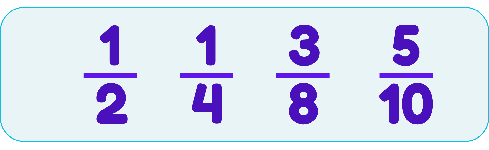
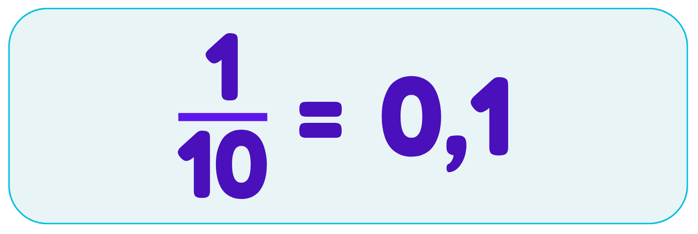
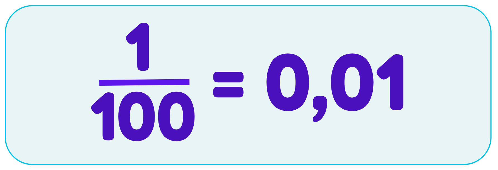
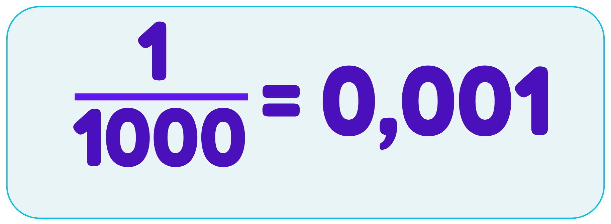
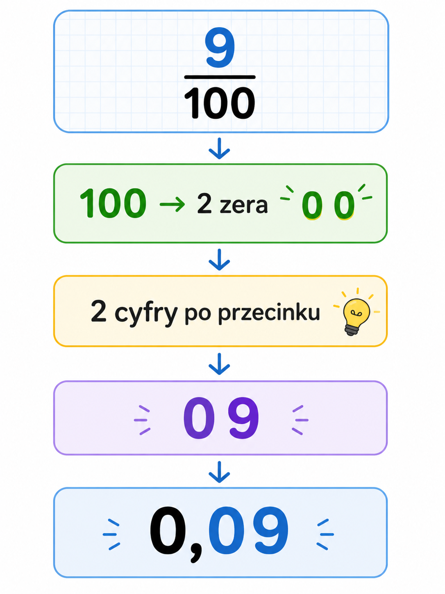

🦉 Już znasz
Przypomnijmy sobie kilka ułamków zwykłych.

Każdy z nich pokazuje część całości.
Кожен дріб показує частину цілого.
 Najważniejsza zasada
Najważniejsza zasada
Ułamek pokazuje część całości.
📐 Co to jest ułamek dziesiętny?
Ułamek dziesiętny zapisujemy za pomocą przecinka.
Powstaje z ułamków,
których mianownik wynosi:
10, 100, 1000



Десяткові дроби мають знаменник: 10, 100 або 1000.
Najważniejsza zasada
Ułamki dziesiętne mają mianownik 10, 100 lub 1000.
🧩 Odkryj zasadę


 Zapamiętaj
Zapamiętaj
10 → 1 cyfra po przecinku
100 → 2 cyfry po przecinku
1000 → 3 cyfry po przecinku
Liczba zer w mianowniku pokazuje, ile cyfr będzie po przecinku.
🇺🇦 Запам'ятай
10 → 1 цифра після коми
100 → 2 цифри після коми
1000 → 3 цифри після коми
Кількість нулів у знаменнику показує, скільки цифр потрібно записати після коми.
🧐 Gdzie podziała się cyfra?
Mianownik to 100.
👉 W liczbie 100 są dwa zera.
To znaczy, że po przecinku muszą być dwie cyfry.
Mamy jednak tylko jedną cyfrę: 9. Brakuje nam jeszcze jednej cyfry.
🤔 Co wpisujemy w puste miejsce? ✅ Wstawiamy 0.
Dlatego: 9/100 = 0,09
Zapamiętaj
🔹 Spójrz na mianownik.
10 → jedno zero → 1 cyfra po przecinku
100 → dwa zera → 2 cyfry po przecinku
1000 → trzy zera → 3 cyfry po przecinku
Jeżeli cyfr po przecinku jest za mało, dopisujemy z lewej strony zera.

Подивись на знаменник.
10 → один нуль → 1 цифра після коми
100 → два нулі → 2 цифри після коми
1000 → три нулі → 3 цифри після коми
Якщо цифр після коми не вистачає, дописуємо нулі зліва.
9/100 = 0,09
Бо після коми повинно бути дві цифри, а число 9 має лише одну цифру.
📖 Jak czytamy ułamki dziesiętne?
Ułamki dziesiętne można czytać na dwa sposoby:
🔹 jako ułamki zwykłe
0,1 → jedna dziesiąta
0,25 → dwadzieścia pięć setnych
0,127 → sto dwadzieścia siedem tysięcznych
🔹 cyfra po cyfrze po przecinku
0,1 → zero przecinek jeden
0,25 → zero przecinek dwadzieścia pięć
0,127 → zero przecinek sto dwadzieścia siedem
💡 W matematyce częściej używamy pierwszego sposobu, ponieważ pokazuje on wartość ułamka.
Десяткові дроби можна читати двома способами:
🔹 як звичайні дроби
0,1 → одна десята
0,25 → двадцять п'ять сотих
0,127 → сто двадцять сім тисячних
🔹 по цифрах після коми
0,1 → нуль кома один
0,25 → нуль кома двадцять п'ять
0,127 → нуль кома сто двадцять сім
💡 На уроках математики частіше використовують перший спосіб, тому що він показує значення дробу.
Pamiętaj!
W życiu codziennym często mówimy: zero przecinek dwadzieścia pięć
Ale na lekcjach matematyki częściej czytamy: dwadzieścia pięć setnych
🇺🇦 Пам'ятай!
У повсякденному житті ми часто говоримо: нуль кома двадцять п'ять
Але на уроках математики частіше читаємо: двадцять п'ять сотих